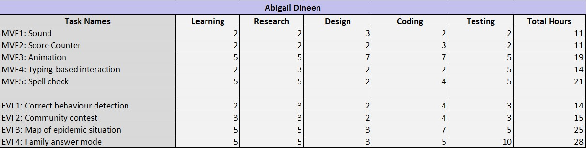
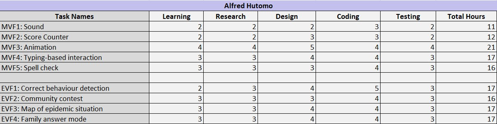
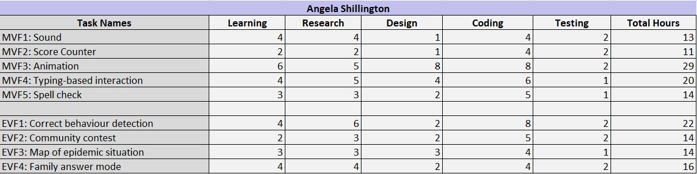
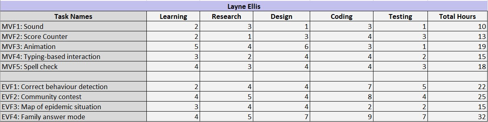
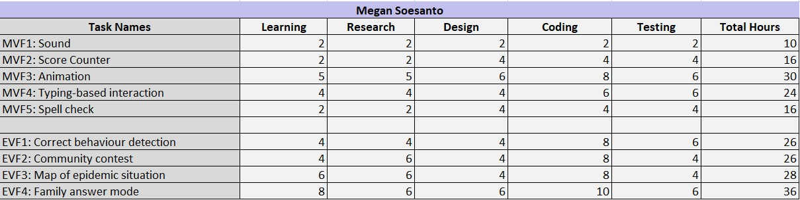

LAMAYA | Assignment Part 2
| Home | Mockups | Plan |
Project Plan
Technologies used
Collaborative workspaces
Github
Github is used to upload and collaboratively work on our project. It allows team members to simultaneously work on and edit files, which is extremely beneficial for our website and game.
Trello
Trello is used mainly to create weekly to-do lists to organise and ensure important tasks are completed. It is also used to keep track of team member’s contributions to the project.
Software
Microsoft Teams
Microsoft Teams is used for the communication of team members. It will be primarily used for our weekly meetings to discuss about what we have done and other tasks that need to be worked on. It also can be used as a messenger app to ensure that all team members can contact each other at any time and allows us to share files and images within the group. The software is free.
Tools
Visual Studio Code V1.48.0
Visual Studio Code will primarily be used as a code editor to code and develop our project. It is beneficial as it allows us to code in multiple coding languages and has a great rating on the Internet for being one of the best and reliable coding software.
Figma/Balsamiq
This web-based software is mainly used for the design of UI applications for our website, as well as creating wireframes and prototypes.
Procreate V5.0.8
Procreate is a graphic editor software on the iOS platform. This software is used for the drawing and design of the game and website, including logos, characters, backgrounds and other miscellaneous objects.
Amazon Web Service
AWS is a cloud web hosting service that allows our group to host our website so others can access it on their own devices. This service was provided to us by RMIT.
Resources
w3schools
This website provides guides and information on various coding languages, including the ones for our project – HTML, CSS and JavaScript. It offers a wide range of tools and examples to help us learn more about how to use these languages for our project.
w3schools
MDN JavaScript Docs
This website is very similar to w3schools however it’s focus is JavaScript, which will help our group code the animation and other features in our game.
MDN JavaScript Docs
Popmotion Animate
This website is a guide for animation in CSS and JavaScript languages.
Popmotion animate
Iconmonstr
This website provides free icons that we will use for our project.
Icons fron iconmonstr
Time Estimations

Reasoning
Abigail Dineen
Each aspect of our time estimation was difficult to establish, as we do not know what issues will arise until we are in that situation. However, basing this of my knowledge on various types of coding and information, as well as how easily accessible this content is online, I came up with the above timely estimations. Personally, I feel that sound does not take as long to implement on a whole as compared to a spell check function. I have worked with sound before and feel comfortable when coding this. However, I have never incorporated a spell check function into a game. In addition, I have never worked with maps and their interactive nature, hence why EVF-3 has such a high total hour across the board, not just for myself but for other team members as well.
Alfred Hutomo
For my time estimations, I made sure that I could spend more time doing the project it self by and getting hands on with the coding part. I personally think that I have a knowledge in coding part of this project. I won't need a lot of time re-learning code instead I would use the time to review some of the code that I have made and start thinking on applying it to the project. Also I could be doing the code design of the project and plan out the testings that will be suitable for the website itself. I would primarly focus on the MVF until it is done, then I can start working the the EVF. Things could be not as expected so I would prepare plan B for this estimated times.
Angela Shillington
Layne Ellis
Time management is a weakpoint of mine, so it was difficult to estimate the amount of time I would spend on each task. For the sections that I have more experience with I allocated less hours as I would need to do less research, but for the sections I will be focusing on I made sure to add extra hours for any additional issues that may arise throughout the course of the project. I also allocated time in sections I will not be focusing on for me to check through and ensure that what we have created as a group is cohesive and makes sense. I wanted to allocate more time for the MVFs than the EVFs, but I quickly realised I had more knowledge and experience in the kinds of code or designs involved in the MVFs than the EVFs. The additional time given to the EVFs reflects this.
Megan Soesanto
In my time estimations, I made sure to put a few extra hours in just in case any problems come up during the time working on the MVF’s. Moreover, I know that my team members will need prior research and learning, so I made sure to provide extra hours dedicated for that too. I personally think MVF1: Sound will require less research and learning and is easy to do so it is the lowest out of all of them. For MVF2: Score Counter, I estimated 16 hours as I believe it requires a bit more time and coding knowledge to implement this feature. I estimated MVF3: Animation a total of 30 hours which is the highest out of the MVF’s because none of our group members have prior knowledge of animation and therefore requires more time to learn and code. I also thought that MVF4: Typing based interaction will require more time to learn and code as it requires us to code user interaction for all activities. Lastly, I thought spell check will not require as much time as I have learnt simple validation techniques in HTML and JavaScript. For the EVF’s, I estimated all features to take 25+ hours because they are more complicated, and I have no coding knowledge on complex user interactions.